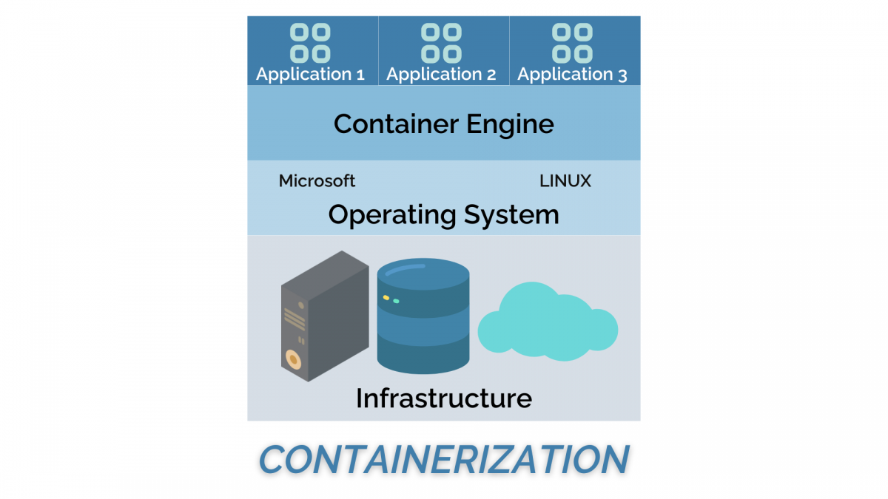

Software and package installation on Bianca¶
Learning Objectives
Learners
- understand principles how to install software and packages yourself
- can install packages of one or several types
- Python packages using conda
- Python packages using pip
- R packages
- Julia packages
- understand what containers are
- can install software using a container
- can build software from source
Notes for teachers
Teaching goals:
- The learners have explored the UPPMAX documentation
- The learners have installed a package (R, python or julia)
- The learners understand how to install own software
Lesson plan:
gantt
title IDEs
dateFormat X
axisFormat %m
Introduction: intro, 0, 10m
Vote on wih IDE: vote, after intro, 5m
Exercise with personal favorite package: crit, exercise, after vote, 20m
Feedback: feedback, after exercise, 10m
Installing software and developing: monologue, after feedback, 5m
Break: milestone, after monologueThe module system¶
Forgot how to use the module system?
- Lots of programs and tools installed as modules on Bianca.
- You can request installations but that may take several days or weeks to be handled by the application experts at UPPMAX.
- Workflow: Application expert installs on Rackham and it is synced over to Bianca within a day.
- Installations yourself.
- Workflow: use the
wharfto transfer installation files and packages to Bianca from Rackham or other place. Here the use of Rackham comes handy because- of the internet connection.
- the computer architecture is somewhat similar such that precompiled binaries or compiled programs (x86_64) on Rackham will most often work also on Bianca.
- Workflow: use the
Content¶
- Principles of software installation on Bianca
- From source
- From binary
- Containers
- Principles of packages on Bianca
- Exercise: test yourself in EITHER
- R
- Conda
- Python/pip
- Julia
- Feedback
- Development and Git on Bianca
Install software yourself¶
- If not available on Bianca already (like Conda repositories) --> use the
wharfto install your tools
Typical workflow for installation
- Download the
- source code or
- binary (Linux on x86 and 64-bit)
- Transfer to the
wharf - Move file(s) to either
$HOMEdirectory.- Handy for personal needs and low numbers of files — i.e. not Conda.
- Example python/R/julia packages.
- Usually better to install in project directory.
- This way the project contains both data and software
- Good for reproducibility, collaboration, and everyone's general sanity.
- Then, either:
- Binaries for Linux on x86 and 64-bit should be able to be run directly as they are.
- Install program following instructions from documentation of the software.
Build from source (C/C++ and Fortran)¶
- To build from source use a compiler module
- We have several compiler versions from GNU and INTEL
makeis installed on the system It could happen that the "Makefile" contains web fetching, which will not work from Bianca.
It could happen that the "Makefile" contains web fetching, which will not work from Bianca.- Usually it is not a problem to build on Rackham and move to Bianca.
cmakeis available as module
Containers¶
- Containers let you install programs without needing to think about the computer environment, like
- operative system
- dependencies (libraries and other programs) with correct versions

From Nextlabs
Info
-
2(3) types
- Singularity/Apptainer perfect for HPC systems
-
Docker that does not work on HPC-systems
- But docker images can be used by Singularity and Apptainer
-
Everything is included
-
Workflow:
- Download on Rackham or local computer
- Transfer to Bianca
- Move to from wharf to any place in your working folders on Bianca
-
Draw-backs
- you install also things that may be already installed
- therefore, probably more disk space is needed
More info
Packages and libraries to scripting programs¶
- Python, R and Julia all have some centrally installed packages that are available from the modules.
- R has a special module called
R_packages, and some Machine Learning python packages are included in thepython_ml_packagesmodule. - If not found there you can try to install those by yourself.
Check packages¶
R
$ ml R_packages/4.3.1
Then within R, try loading the package you want, like glmnet:
library(glmnet)
Python
- Check python versions:
ml avail python -
Check python packages/modules
- help output from:
ml help python/3.12.7 -
In a loaded python
- Load a python version, like:
ml python/3.11.8 - from Python shell with the
importcommand - from BASH shell with the
pip listcommand
- Load a python version, like:
- help output from:
Julia
- At UPPMAX there is a central library with installed packages.
- This is good, especially when working on Bianca, since you then do not need to install via the
wharf. -
It is often better to install you own, see below, or ask the support to install centrally.
-
Check julia versions:
ml avail julia -
Check julia packages/modules
- help output from:
ml help julia/1.9.3 -
In a loaded julia
- Load a python version, like:
ml julia/1.8.5 - from julia shell with the
usingcommand
- Load a python version, like:
- help output from:
Install packages, principles¶
Installation principle
- Install on Rackham or other place
- Sync to
wharf - Move the files on Bianca to a place in the path used for packages of R, Python (pip) or julia
R
- Typical place to put R packages:
~/R - Otherwise you may have to update your
R_LIBS_USER="<path>"
Links:
pip (PyPI)
- Typical place to put python packages:
~/.local/lib/python<version>/site-packages/ - Otherwise you may have to update
PYTHONPATH="<path>"
Links:
Tip Python packages
- Try Conda first directly on Bianca. We have mirrored all major Conda repositories directly on UPPMAX, on both Rackham and Bianca. These are updated every third day.
- If you want to keep number of files down, use PyPI (pip), but then you need to use Rackham and the
wharf.
Conda
- We have mirrored the non-proprietary Conda repositories (not
main,anacondaandr) directly on UPPMAX, on both Rackham and Bianca. These are updated every third day. - Good to change
CONDA_ENVS_PATHto project folder, because of many small files. - Example:
CONDA_ENVS_PATH=/proj/sens2023598/bjornc/conda
Links:
Julia
- Typical place to put julia packages:
~/.julia/packages - Otherwise you may have to update
export JULIA_LOAD_PATH="path1:path2:..."
Links:
- Extra material: Installing Julia packages
- UPPMAX julia user guide: Pip
- Julia course: isolated environments
- contact NAISS support for individual help!
Exercise 20 min¶
Pick one of the following topics!
- Read the introduction with a demo and use it to solve the exercise in the end.
-
"Containers" contains less material but may take time to install.
- Extra material: Installing pip packages
- Extra material: Installing R packages
-
One breakout room per topic: Help each-other!
Discussion
- Did it work out well?
- Any questions?
- Any input?
Own development and Git¶
Keypoints
- You have got an overview of the procedures to install packages/libraries and tools on Bianca through the
wharf - If you feel uncomfortable or think that many users would benefit from the software, ask the support to install it.